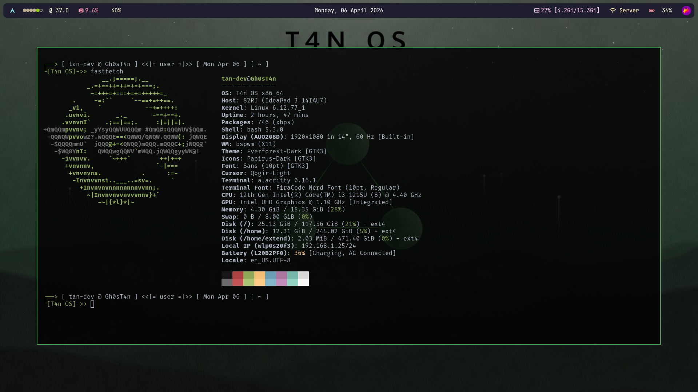
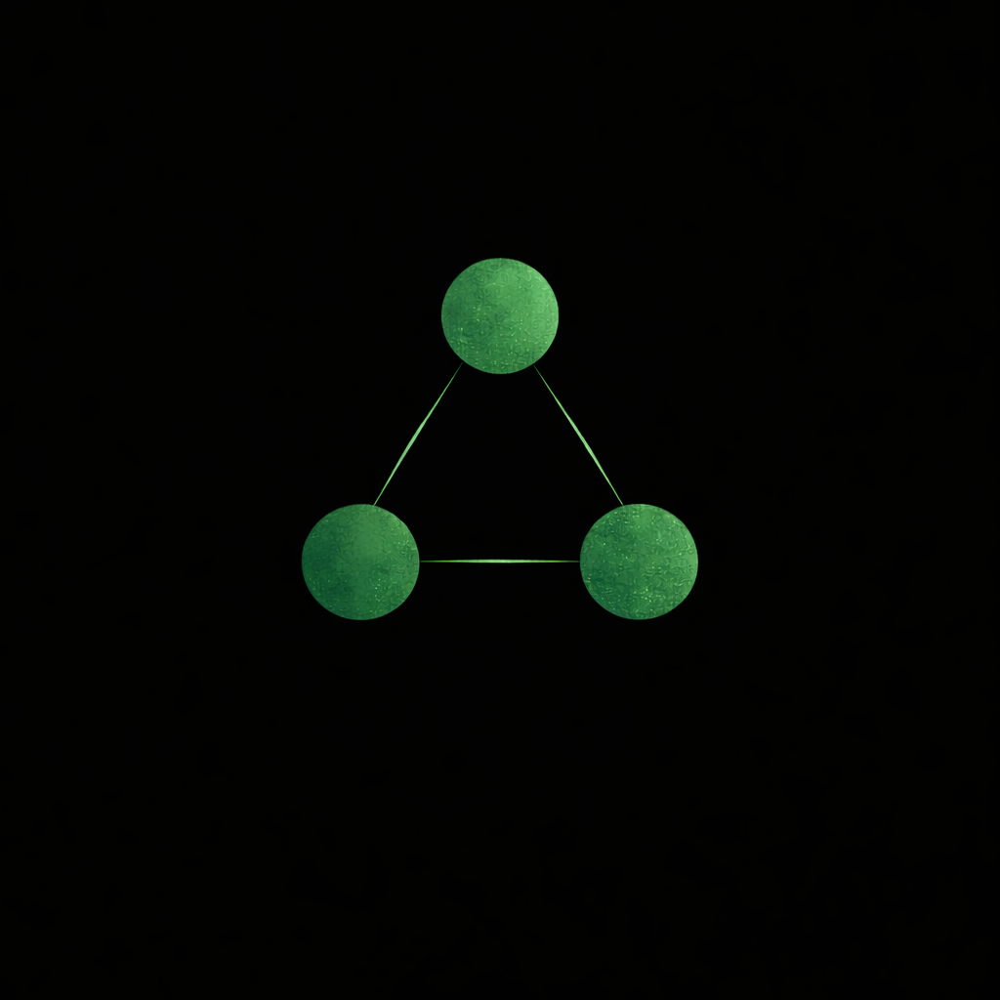

Tentang T4n OS
T4n OS adalah GNU/Linux berbasis Void Linux, dirancang dengan prinsip minimalis, cepat, dan ringan. Sistem ini menggunakan runit sebagai init system untuk memberikan performa maksimal dan kontrol penuh terhadap sistem.
T4n OS dikembangkan di Indonesia, Aceh, dan pertama kali diinisiasi oleh Gh0sT4n pada 17 Agustus 2025, seorang pelajar asal Aceh (Darussa’adah Cot Tarom Baroh – SMKN 5 Takengon). Pengembangan T4n OS menggunakan pendekatan community-driven: dari komunitas, oleh komunitas, dan untuk komunitas.
Selain itu, T4n OS mengadopsi konsep repositori yang terinspirasi dari AUR (Arch User Repository), yaitu VUR (Void User Repository), untuk mempermudah distribusi dan pengelolaan paket bagi pengguna.
Filosofi
Keep Things Simple
.
Mengikuti filosofi UNIX: lakukan satu hal dengan baik. Tanpa abstraksi yang tidak perlu.
Community First
.
Proyek dikembangkan secara terbuka oleh komunitas, untuk komunitas.
Minimal by Default
.
Hanya yang dibutuhkan. Sistem dasar yang bersih tanpa bloatware atau aplikasi surplus.
Core Features
Void Linux Base
Mewarisi kestabilan dan kecepatan Void Linux sebagai upstream utama.
Runit Init
Sistem init yang cepat, ringan, dan mudah dipahami dibandingkan systemd.
XBPS Package Manager
Manajemen paket yang ekstrem cepat dan efisien untuk dependensi.
VUR Ecosystem
Void User Repository. Akses instan ke ribuan paket tambahan komunitas.
Rolling Release
Selalu dapatkan pembaruan terbaru kernel dan perangkat lunak tanpa reinstall.
Lightweight
Arsitektur yang dirancang untuk performa maksimal pada hardware lama maupun baru.
Gallery


Download Resmi
Pilih Edisi Anda
Tersedia dalam beberapa varian yang disesuaikan untuk kebutuhan spesifik Anda.